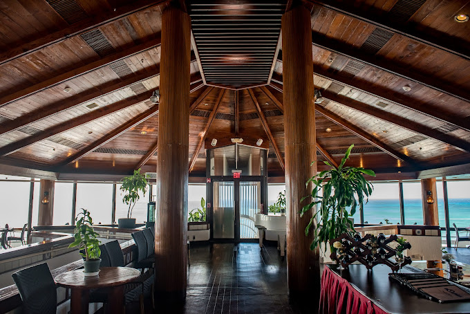

Dining
Dolphin restaurant has a variety of meals, and set meals to offer. They serve local and Japanese
cuisine, and sometimes a mixture of them both! They offer lunch and dinner sets every day on
their Facebook page. Their meal sets include:
- Soup of the day or Miso soup
- Rice
- Salad
- Free bottomless iced tea or water
One of my favorites when visiting the restaurant is the view it offers. The interior decor of the
restaurant provides a laid–back allure of the view of the ocean. One of the best parts is
the almost 360° wide windows that surround the restaurant, characterized by light, and the
wooden texture that provide you with that island fine dining feeling.
Restaurant Information
Dolphin restaurant is available from MONDAY–SUNDAY starting their lunch hours at:
11:30am–2:00pm, and their dinner hours start from,
5:30pm–9:00pm.
If you are interested in making a reservation or inquiries you may contact them at:1-670-234-6495.